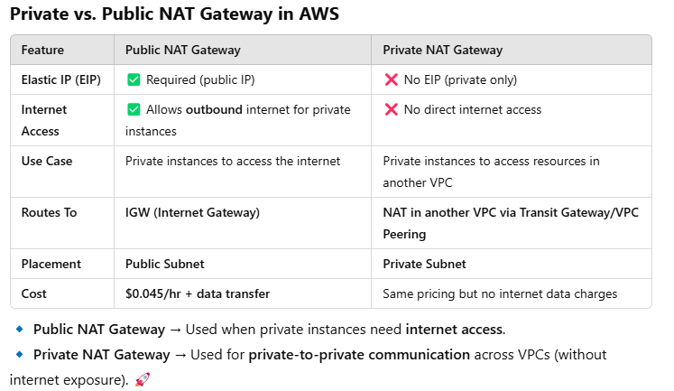

VPC-2¶
1. bastion host¶
- Access(perform SSH) ec2-i in private subnet from internet ( via bastion host)
- SSH protocol, which is a TCP based protocol on port 22.

- just update SGs:
- sg-bastion :
- allow inbound traffic 0.0.0.0/0 on port 22(SSH)
- sg-ec2-i :
- allow inbound traffic from sg-bastion, on port 22(SSH)

- bastion host is not typically used to manage all
outgoing trafficfrom the private network to the internet.
2. NAT instance  ¶
¶
- can be used as a bastion server
- outdated after 2020
- NAT instances are not a managed service, it has to be managed and maintained by the customer.
- Alternative : NAT gateway
- need internet access for ec2-i running on private subnet. how ?
-
route internet traffic to IGW via through NAT-instance.
- deploy NAT-instance in public subnet
- create ec2-i, from PreConfigured Linux AMI,
amzn-ami-vpc-nat-<year>.xxxxxxx-<cpu-arch> - disable source/destination IP check, so that it will re-write
srcanddestIPs 
- update rtb of private subnet
- 0.0.0.0/0 :: NAT-instance
- update NAT-instance sg
- update sg of private ec2-i, to allow traffic from NAT-instance-sg
- assign elastic-IP
-
it supports port forwarding

- by modifying the instance's iptables rules.
-
to forward traffic
- from : specific port on the NAT Instance
- to : port on a private EC2 instance.
-

- https://app.diagrams.net/#Hlekhrajdinkar%2F02-spring%2Fmain%2Faws%2FVPC-1.drawio
- types and use case: private and public
- 
- private NAT-g: use to route traffic from VPC-1 to VPC-2, having overllaping CIDR.
3. NAT Gateway¶
- Can’t be used by EC2 instance in the same subnet, where NAT gateway is present
- NAT gateway cannot be used as a bastion server
-
does not support port forwarding
-
primary task:
- enable instances in a private subnet to connect to the internet or other AWS services
-
but prevent the internet from initiating a connection with those instances.
-
AZ bounded
- AWS-managed
- no administration
-
No Security Groups to manage
- alternative: attach ACL on subnet
-
higher bandwidth supports bandwidth :
5 - 45 Gbps. -
provision
- create one with
in each AZ - assign elastic-IP
- choose public subnet (having IGW)
-
update route table of each private subnet.
- if destination is
0.0.0.0/0:: then route toNAT-gateway-az-1 - if destination is
0.0.0.0/0:: then route toNAT-gateway-az-2 - ...
- if destination is
-
more
- supported protocols: TCP, UDP, and ICMP.
- support up to
55,000simultaneous connections, to each unique destination. - primarily for outbound-only traffic from private subnets